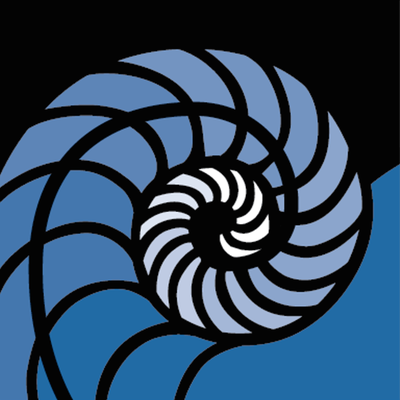

Spatial genomics
papers- transcriptional bursting
- RNA localization
- splicing
- nuclear organization
- spatial transcriptomics
- point processes
on parental leave until 2027 I'll reply to emails when I can. Thanks for your patience!
News Welcome Tim Tian, joining from UBC as a postdoc.
Funded by
JT Zanussi, CE Miles
R Gu, RZ Zhang, CE Miles
W Shi, CE Miles, J Noh, G Danuser, A Mogilner
CE Miles, F Renda, I Tikhonenko, A Alfieri, A Mogilner, A Khodjakov
RZ Zhang, CE Miles, X Xie, JS Lowengrub
RZ Zhang, CE Miles, X Xie, JS Lowengrub
CE Miles, RJ Webber
J Gu, N Laszik, CE Miles, J Allard, TL Downing, EL Read
CE Miles
SA Correa, A Kachabi, M Colebank, CE Miles, N Chelser
T Nguyen, SP Gross, CE Miles
Y Zhuang, X Guo, OV Razorenova, CE Miles, W Zhao, X Shi
CE Miles, SA McKinley, F Ding, RB Lehoucq
T Nguyen, BJN Reddy, SP Gross, CE Miles
P Tan, CE Miles
M Aminian, K Kurianski, A Ma, CE Milesnews report
BR Karamched, CE Miles
S Marbach, CE Miles
CE Miles, A Mogilnerdispatch
F Renda, CE Miles, …, A Mogilner, A Khodjakov
CE Miles, J Zhu, A Mogilner
CE Miles, A Mogilnerbook chapter
F Renda, …, CE Miles, A Mogilner, A Khodjakov
ES Welf, CE Miles, …, A Mogilner, G Danuser
SD Lawley, AE Lindsay, CE Miles
SD Lawley, CE Miles
O Osunbayo, CE Miles, BJ Reddy, JP Keener, MD Vershinin
SD Lawley, CE Miles
CE Miles, SD Lawley, JP Keener
CE Miles, JP Keener
CE Miles, JP Keener
No papers match.
PhD Student · UCI MCSB
methods for simulation-based inference (co-advised w/ John Lowengrub)
fav veggie: all peppers honorary
PhD Student · UCI MCSB
nuclear condensates, cilia (co-advised w/ Jun Allard)
fav veggie: onion
PhD Student · UCI Math
physics-informed neural networks + point processes
fav veggie: spinach
PhD Student · Utah Math Bio
meiosis biophysics, polymer models (co-advised w/ Ofer Rog)
fav veggie: sweet potato
Prospective students: apply to Utah Math and/or reach out to Chris.
fav veggie: be ready to defend it
Trini Nguyen
MCSB PhD 2024 (co-advised w/ Steve Gross)
after: Postdoc, Cedars-Sinai Hospital
fav veggie: bittermelon
Hobbies: skiing when it snows, gaming when it doesn't (mostly the case, lately).
Not to be confused with: Chris Miles (rapper), Christopher J. Miles (other mathematician), or Chris Miles (artist).

Bulletin of Mathematical BiologyEditorial Board · since 2024